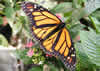
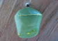

Here are some interesting and strange butterfly facts. You can use these to amaze your family and friends.
 The Monarch butterfly, also known as the milkweed butterfly, is not able to survive cold winters of North America. Eastern Monarchs will migrate to Mexico and those in the Rocky Mountains will travel to California. The longest distance Monarch butterflies have been known to journey is from the Great Lakes to the Gulf of Mexico, a distance of about 2,000 miles, and return to the north again in the spring.
 The Monarch cocoon is called a chrysalis. As the butterfly begins to metamorphose, the chrysalis begins to darken and will turn transparent just before the butterfly emerges. The mature butterfly emerges after about two weeks and hangs from the split chrysalis for several hours until its wings are dry. Monarchs can live two to eight weeks in a butterfly garden.
Swallowtail butterflies, being large, colorful, and attractive, have been the target of butterfly collectors in earlier times. The adults are often tailed like the forked tail of some swallows, giving the insect its name. There are at least 550 species, and though the majority are tropical, members of the family are found on all continents except Antarctica.
 The Zebra Swallowtail has triangular wings with long tails. It has some
distinctive black and white markings on its wings and some small red and
blue markings on both bottom corners of the wings. The Zebra Swallowtail
Butterfly is also the official state butterfly of Tennessee.
The Zebra Swallowtail has triangular wings with long tails. It has some
distinctive black and white markings on its wings and some small red and
blue markings on both bottom corners of the wings. The Zebra Swallowtail
Butterfly is also the official state butterfly of Tennessee.
Swallowtail (butterfly) Wikipedia
 Many Morpho butterflies are colored in metallic, shimmering shades of
blue and green. These colors are not a result of pigmentation but are an
example of iridescence, the sun reflecting in certain light spectrums
from scales on the wings.
Many Morpho butterflies are colored in metallic, shimmering shades of
blue and green. These colors are not a result of pigmentation but are an
example of iridescence, the sun reflecting in certain light spectrums
from scales on the wings.
Morpho butterflies are forest dwellers but will venture into sunny clearings to warm themselves. The entire life cycle of the Morpho butterfly, from egg to death, is approximately 137 days. The adults live for about a month. They have few predators as the adults are poisonous due to the feeding caterpillar sequestering poisonous compounds.